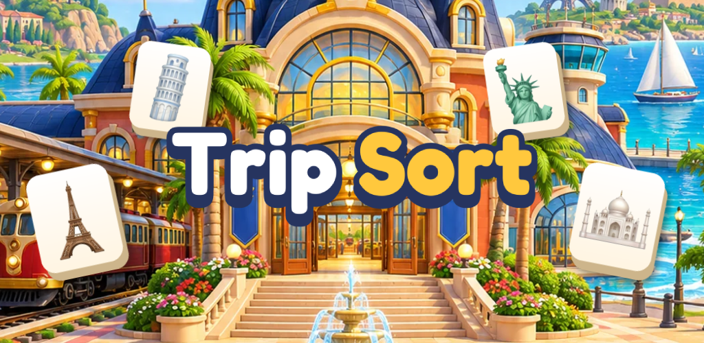
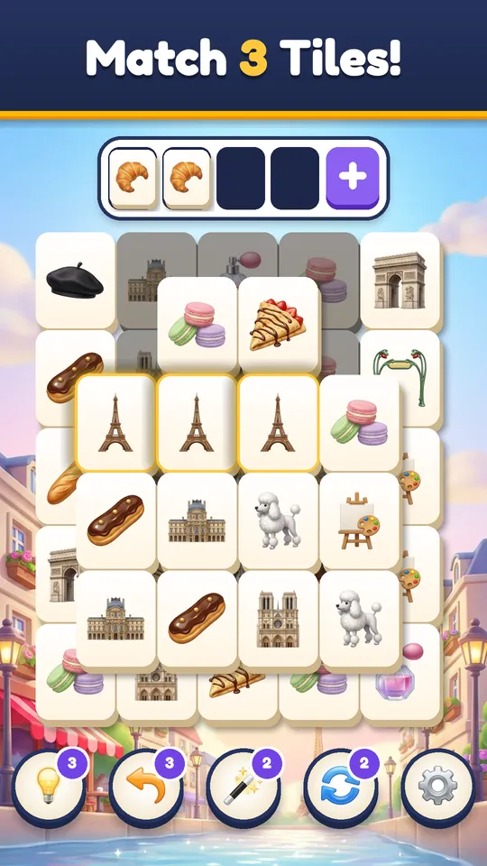
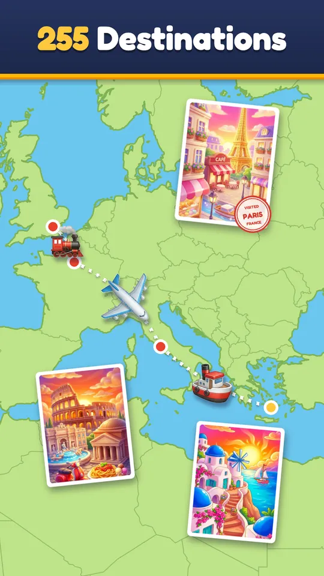
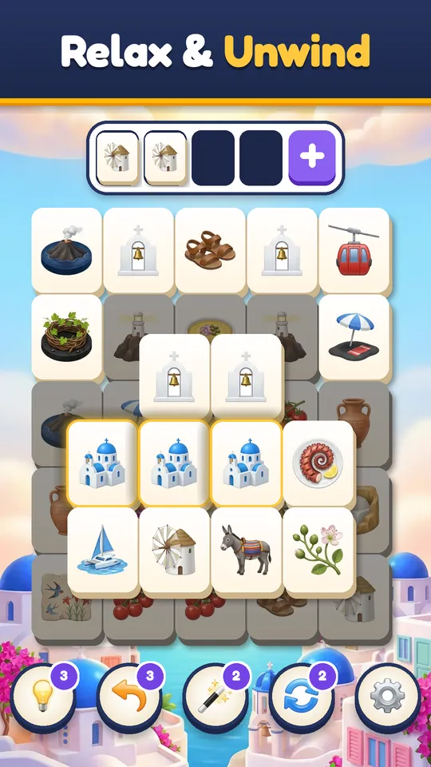
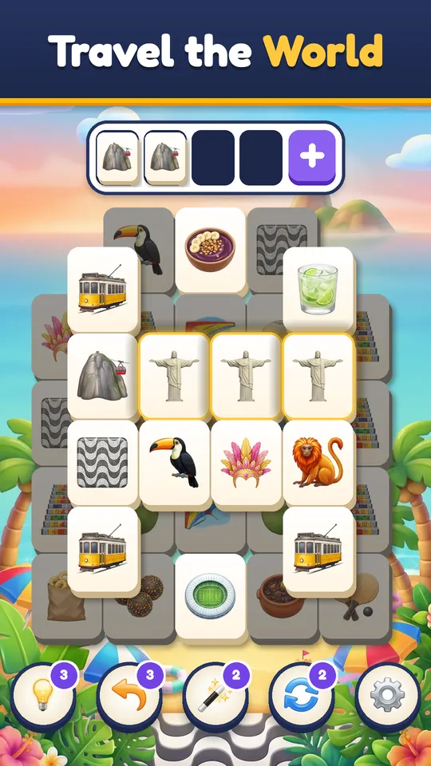

Trip Sort
Match 3 tiles and travel the world
A relaxing tile matching puzzle. Clear the board, fill your postcard and fly, sail or ride to the next of 255 destinations.

One board at a time, all around the world
Every city brings its own tiles: croissants and the Eiffel Tower in Paris, torii gates and sushi in Kyoto, tango shoes and mate in Buenos Aires.




Why you'll keep traveling
Match 3 tiles
Tap a tile to send it to your tray. Three of a kind clear. Clear them all to finish the level.
255 destinations
Real cities on every continent, 12 levels each: over 3,000 levels in all.
A real trip
Finish a city and watch your plane, ship or train cross the map to the next stop.
Postcards and landmarks
Every level adds a piece to the city's postcard, and some destinations hide a famous landmark to collect.
Relaxing, never rushed
No timers. Early boards are calm; later ones stack tiles in layers for a gentle challenge.
Play offline
Every level works without internet, on the plane, on the train or on the couch.
Support
Questions about the game, a purchase or a level? Start here.
Where is my progress saved?
On your device. Trip Sort has no accounts, so your levels, coins and boosters stay on your phone. Deleting the game deletes your progress.
I bought something and it did not arrive.
Open the Shop and tap Restore Purchases. Remove Ads and the Starter Pack come back on the same Apple or Google account. If coins from a pack are missing, write to us with the date and the pack's name.
Can I play without internet?
Yes. Every level works offline. Without a connection there are simply no ads and the Shop is not available.
How do I turn off the music or the sounds?
Tap the gear in the top corner. Sound, Music and Vibration each have their own switch.
Can I play an old level again?
Yes. Open the Journey, tap a destination you have completed and pick any of its 12 levels.
gulabonzinillc@gmail.com · we usually answer within two days